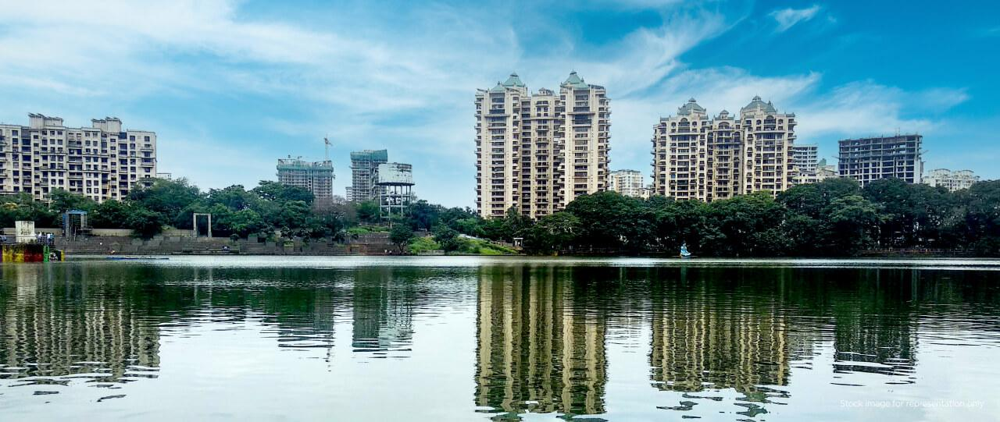
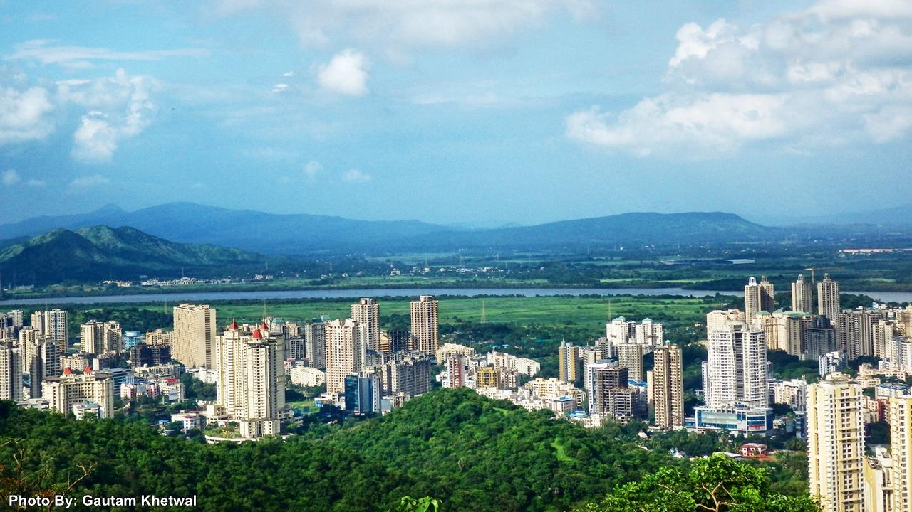
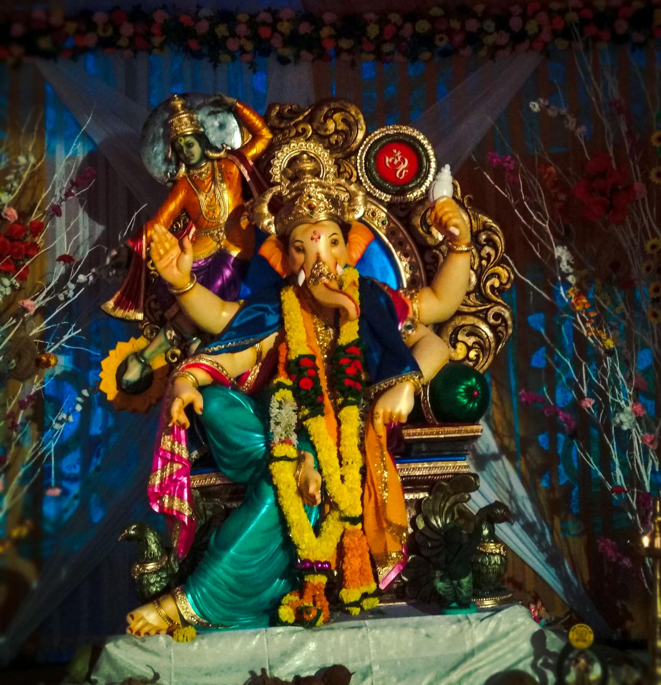
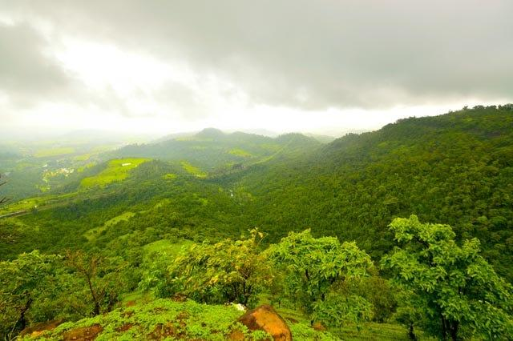
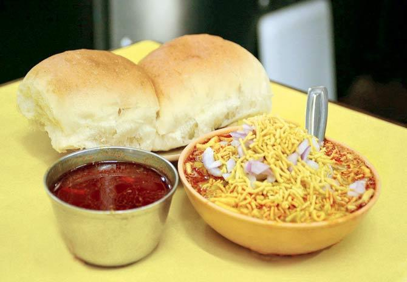
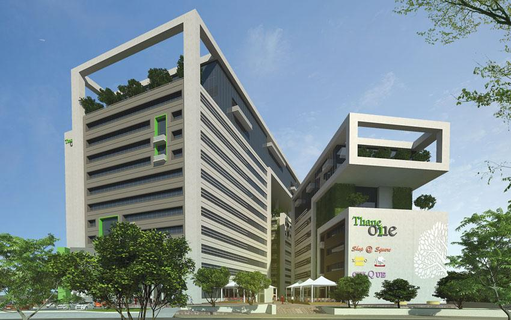
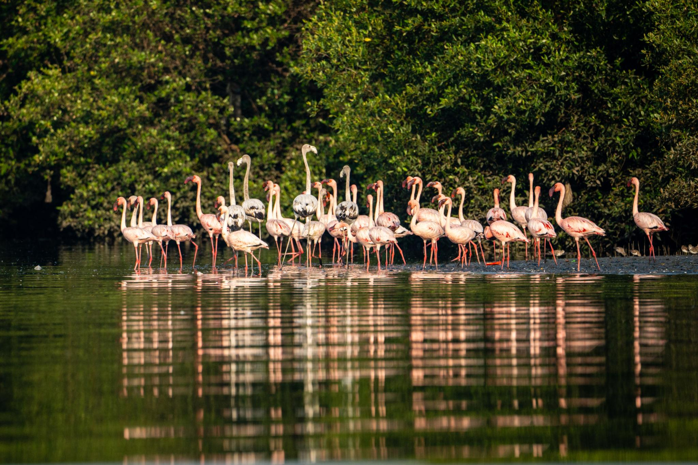
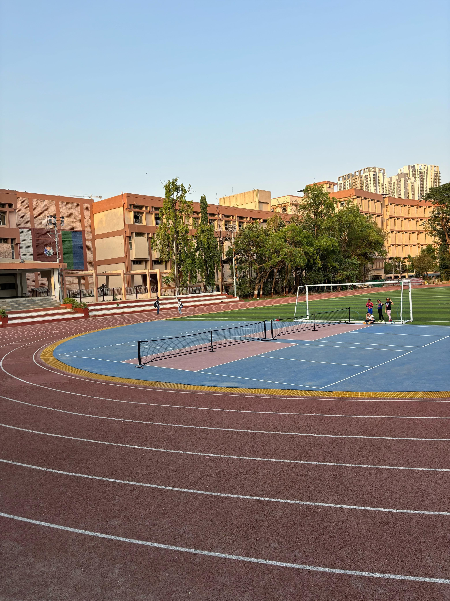

About

Thane, an integral part of the Mumbai Metropolitan Region, is a historically rich, economically vibrant, and geographically stunning city in Maharashtra. Popularly known as the “City of Lakes”, it provides a highly balanced, green, and modern lifestyle while retaining a deeply rooted cultural and historical identity.
- Location: Mainland and Island Thane sits partly on the mainland and partly on the north-eastern portion of Salsette Island, right next to Mumbai. Near Pune the district is about 120 to 130 kilometers northwest of Pune city. Water Borders it is beautifully bordered by the Ulhas River, the Thane Creek, and the Parsik Hills.
- Famous as: City of Lakes it is widely famous for housing over 30 beautiful lakes right inside the city. First Train Birthplace it holds a major place in history as the destination for India's very first passenger train from Bori Bunder in 1853. Mega Residential Hub it is famous for huge, modern mega-townships and premium high-rises that offer a green lifestyle close to Mumbai.
History

Originally called Shristhanaka or Thana, the region's history dates back thousands of years and features prominently in writings by Ptolemy and Marco Polo. Ruled successively by the Mauryas, Shilaharas, Portuguese, and the Marathas, it is widely known as the birthplace of India's first passenger train in 1853.
- Ancient Fishermen: The land was first home to the Koli fishing community.Capital City it was the grand capital of the Shilahara kings 1,000 years ago. Maratha Power the Marathas bravely fought and took the city from the Portuguese in 1737. First Train the British took over later, and India's very first train ran to Thane in 1853. Old Temple the historic Ambarnath Temple still stands today from those ancient times.
Culture

Thane possesses a culturally diverse and harmonious community where festivals like Navratri, Ganesh Chaturthi, and Diwali are celebrated with immense fervor. The city hosts large-scale cultural events, notably at the scenic Upvan Lake.
- Main Festivals: Ganesh Utsav & Navratri: Ganesh Chaturthi is celebrated with grand decorations, while Navratri brings massive Dandiya events.Upvan Arts Festival: Instead of Kala Ghoda, locals flock to the famous Upvan Arts Festival held right by Thane's scenic Upvan Lake.
- Traditional Arts: Marathi Theatre Hub: Thane is a major powerhouse for traditional Marathi Theatre, with packed shows at the famous Gadkari Rangayatan auditorium.Warli & Koli Art: The district is home to the indigenous Warli tribal art paintings and traditional Koli folk dances.
- Language:Official Tongue: Marathi is the heart of the city and widely spoken by locals.Thaneri Blend: The suburbs speak standard Hindi and a local blend of Marathi and Hindi, without the heavy South Mumbai street slang.
Tourism

The city is a nature lover's paradise dotted with over 30 lakes and bordered by the lush Yeoor Hills (Sanjay Gandhi National Park). Key attractions include the Thane Creek Flamingo Sanctuary, Mama-Bhanja Waterfall, and the historic Thane Fort.
- Upvan Lake: This is the city's most famous lake, located at the foot of the Yeoor Hills. It has a beautiful walking path, lovely lights at night, and hosts the grand Upvan Arts Festival every year.
- Ambarnath Shiv Temple: Built over 1,000 years ago by the Shilahara kings, this beautiful historic temple is carved out of solid stone. It is a spectacular piece of ancient architecture and a highly revered spiritual site.
- Yeoor Hills: Situated inside the Sanjay Gandhi National Park, this lush green forest area is the perfect escape for nature lovers. It is a very popular spot for morning walks, bird watching, and hiking away from the busy city.
Famous Food

Thane’s culinary scene is a vibrant mix of Maharashtrian and coastal Konkani flavors. Local favorites include spicy Misal Pav, Vada Pav, Thalipeeth, fresh seafood (such as Bombil fry), and traditional sweets like Modak.
- Famous dishes:Misal Pav:Thane is legendary for its spicy, sprouted-bean curry topped with crunchy farsan, served with soft bread. Maharashtrian Thali: Locals love authentic, home-style meals featuring Pithla Bhakri (chickpea flour curry with flatbread) and Bharli Vangi (stuffed eggplant).
- Local Specialty:Mamledar Misal: This is Thane's most famous culinary crown jewel, known across Maharashtra for its fiery, customizable spice levels. Koli Seafood & Sweets: Freshly caught creek fish cooked in spicy Konkani masalas, followed by sweet, coconut-filled Ukdiche Modak.
Economy

Thane has transitioned from an industrial center to a major corporate and IT hub. It acts as a massive commercial gateway with superior connectivity to Mumbai, featuring world-class residential, retail, and commercial developments.
- Key Industries:IT and Corporate Hubs: Thane has moved away from old chemical factories to become a massive center for Information Technology (IT), digital services, and major corporate back-offices.
- Main Crops:Rice & Grains: In the rural parts of Thane district, Rice (Paddy) is the absolute main crop grown during the monsoon season, along with finger millet (Nagli). Famous Fruits: The district is highly famous for growing sweet Chikoos (Sapodilla) and unique, juicy Gholvad Chikoos that hold a special geographic tag.
Environment

The city focuses heavily on ecological preservation. The Yeoor Hills act as a vital green lung, while the wetlands of the Thane Creek support rich biodiversity and migratory birds.
- Climate: The city is hot, humid, and gets very heavy rain from June to September.
- Key Rivers: The Ulhas River is the primary water lifeline that flows through Thane. The district has big river dams like Bhatsa that supply vital drinking water.
- Protected Areas: The Yeoor Hills form a lush, protected forest on the edge of the city. The Thane Creek Flamingo Sanctuary welcomes thousands of pink flamingos every year.
Sports

Thane encourages an active, health-conscious lifestyle. It boasts modern infrastructure, including the Dada Kondke Auditorium and Dadoji Kondadev Stadium, which host various local and regional sporting events, while its many lakes and hills are popular for jogging and cycling.
- Traditional Sports: The city proudly hosts fast-paced Kabaddi and Kho-Kho tournaments across local neighbourhoods and schools. Local sports clubs heavily promote Kushti (traditional Indian wrestling) inside traditional clay rings called Akhadas.
- Focus: The main focus is on Cricket, Football, and Badminton, with a highly active local league culture. The city uses the famous Dadoji Kondadev Stadium to train top-tier athletes and host major regional sports matches.